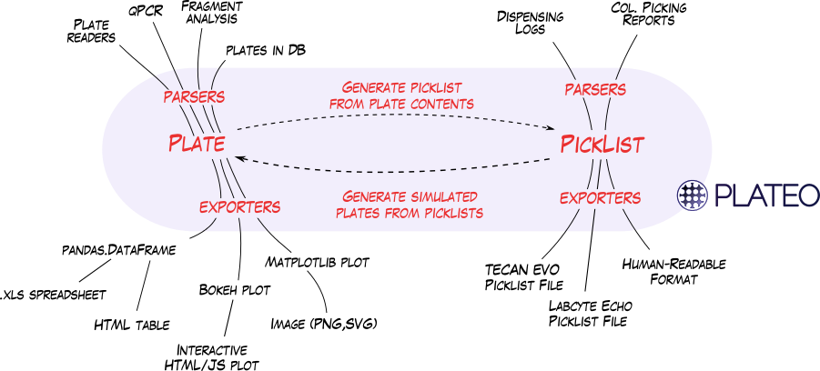

Plateo Documentation¶

Plateo (pronounced Plato, like the planet) is a Python library to assist in the planning, running and checking of laboratory experiments involving microplates.
It can be used to:
Read and write robotic protocols (picklists) in different formats to accomodate different liquid dispensers (Tecan EVO, Labcyte Echo).
Simulate liquid dispensing runs, taking into account the capacity and dead volume of each container, to predict the maps of future plates.
Parse plate data from common laboratory robots (for kinetic experiments, fragment analysis, qPCR, etc.)
Export plate information in various formats (graphics, spreadsheets, HTML, JSON, etc.).
The following schema shows how Plateo’s file parsers, exporters, and protocol simulator work together
{kind=link}
Work in progress - contribute !¶
Plateo is an open-source software originally written at the Edinburgh Genome Foundry (an academic platform) by Zulko and released on Github under the MIT licence (¢ Edinburgh Genome Foundry).
It was released in the hope that it will be as useful for other automated labs as it is for use, but keep in mind that it is still under development, the features and docs will get better.
Plateo aims at collecting parsers and export routines to speak to any kind of automated equipment. If you have written parsers that don’t appear in Plateo, we are happy to hear about it. If you need help writing parsers for your favorite robot, we may be able to help too !